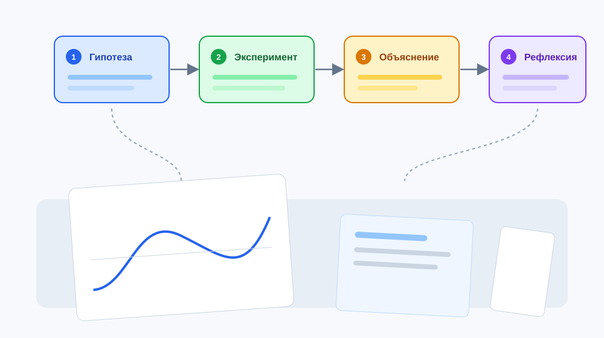

Педагогический дизайн
Концепция «видимого мышления»: каждый этап решения представлен в наглядной и обсуждаемой форме.
Концепция
В отличие от электронного учебника, платформа предлагает не линейное изложение, а пространство математического эксперимента. Подход опирается на принципы наглядности, доступности, индивидуализации и обратной связи, а также на таксономию учебных целей.

Наглядность
Абстрактный объект переводится в наблюдаемую форму.
Доступность
Интерфейс и материалы доступны разным категориям пользователей.
Индивидуализация
Темп и сложность заданий учитывают тип ошибки.
Обратная связь
Объяснение хода решения, а не только вердикт.
Таксономия учебных целей
- Знать
- Понимать
- Применять
- Анализировать
- Создавать
Задания платформы сопоставляются с уровнями таксономии: от распознавания структуры объекта до формулировки и аргументации собственной гипотезы.
От учебника к среде эксперимента
| Электронный учебник | MathVizor |
|---|---|
| Готовый результат, поиск скрыт | Пошаговый поиск и обсуждаемые этапы |
| Линейное изложение | Пространство математического эксперимента |
| Проверка верности ответа | Выявление характера ошибки и типа затруднения |
| Одинаковый темп для всех | Индивидуальная траектория по журналу действий |
Анализ цифровых ресурсов
| Группа | Примеры | Ограничение |
|---|---|---|
| Динамические среды | GeoGebra, Cabri | Нет методически выстроенной последовательности и отчётности для преподавателя |
| Графовые калькуляторы | Desmos | Ограниченная символьная объясняющая часть |
| Системы компьютерной алгебры | Wolfram Mathematica, SymPy | Интерфейс ориентирован на владеющего математическим аппаратом |
| Платформы онлайн-курсов | Stepik, Coursera, Khan Academy | Ход рассуждений остаётся невидимым; англоязычный контент |
Востребована отечественная разработка, объединяющая наглядность визуализации, объясняющую силу вычислений, адаптивность и прозрачную аналитику.